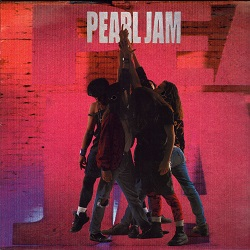

Eddie Vedder
Vedder nació el 23 de diciembre de 1964 en Evanston, un suburbio cercano a Chicago, en el estado de Illinois con el nombre de Edward Louis
Severson III, siendo sus padres Karen Lee Vedder y Edward Louis
Severson, Jr., los cuales se divorciarían en 1965 cuando Vedder aún era un niño.
Su madre se casaría rápidamente con un hombre llamado Peter Mueller. Vedder fue criado con la creencia que Muller era su padre biológico, por lo que
se llamó Edward Mueller por un tiempo. De entre los antepasados de Vedder se pueden encontrar raíces alemanas y danesas.

o terminar de tajo con su carrera, pero sólo en un par de ocasiones aquel primer material convierte a un grupo de jóvenes
en leyendas; ese fue el caso de Pearl Jam y Ten.
